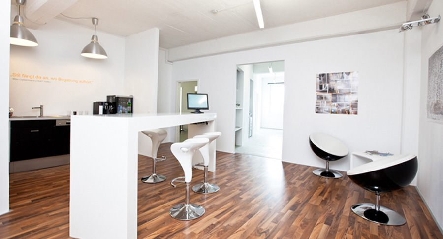
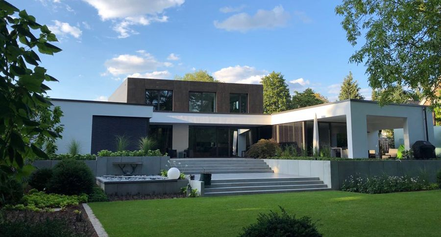
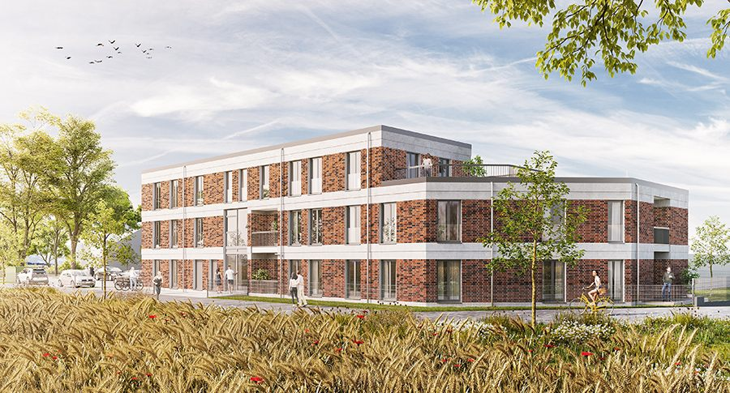

Architektur für Wohnen, Verwaltung und Gewerbe
Entwurf, Planung und Bauausführung in Hannover. Die Leistungsphasen 1 bis 9 aus einer Hand – vom ersten gemeinsamen Gespräch bis zur Fertigstellung.
- Büro
- Jordanstraße 26a
30173 Hannover, Südstadt - Telefon
- 0511 70038531
- info@stilxarchitektur.de
- Architekt
- Markus Pankse, eingetragen in der
Architektenkammer Niedersachsen
„Stil fängt da an, wo Begabung aufhört.“

Das Büro
Markus Pankse hat den Bau von unten gelernt: erst die Ausbildung zum Maurergesellen, dann das Architekturstudium an der Universität Hannover. Seit April 2010 führt er STIL x Architektur in eigener Verantwortung.
Das Büro plant und baut Wohn-, Verwaltungs- und Gewerbeobjekte – Neubau ebenso wie Sanierung, Modernisierung und Projektierung. Zur Arbeit gehört die Bestandsaufnahme vor dem ersten Strich genauso wie die Baubetreuung vor Ort und die Abstimmung mit den ausführenden Firmen. Auch über das Spektrum der HOAI hinaus: eine individuelle Betreuung für eine individuelle Architektur.
Werdegang
- seit 04/2010 Inhaber STIL x Architektur, Hannover
- 2001–2010 geschäftsführender Gesellschafter, OBJECX Architektur, Hannover
- 2005 Lehrauftrag Universität Hannover, „Räume und Virtuelle Realitäten“
- 2005 Lehrauftrag Universität Kassel, „Graphische Kommunikation“
- 2002–2004 wissenschaftliche Hilfskraft Universität Hannover, Mitorganisation der 8. Architektur-Biennale Venedig mit eigener Ausstellung vor Ort
- 2001 Praktikum in Peking, Obermeyer Consulting Engineers
- 1996–1998 Ausbildung zum Maurergesellen und Tätigkeit im Beruf
Eingetragen und Mitglied
- Architektenkammer Niedersachsen
- Energieberater, zertifiziert nach BAFA und KfW
- Bundesverband für integrales Bauen (BinBau)
Leistungen
Die Leistungsphasen 1 bis 9 werden vollständig angeboten – für Neubauten, Sanierungen, Modernisierungen und Projektierungen.
Planerische Tätigkeiten
- Vorentwurf und Entwurf
- Planung, Genehmigungs- und Ausführungsplanung
- Ausschreibung und Vergabe
- Bauleitung und Baubetreuung
- Projektentwicklung und Projektierung
- Aufmaß
Beratende Tätigkeiten
- Bestandsanalyse
- Bauberatung
- Energieberatung
- Energiekonzept
Worauf besonderer Wert gelegt wird
Detaillierte Bestandsaufnahme und Bestandsanalyse, bevor geplant wird.
Hochwertige Architektur – und deren Ausführung.
Umfassende Grundlagengespräche und realistische Kostenkalkulationen.
Energie- und Einsparmöglichkeiten im Neubau und durch Sanierung.
Die notwendigen Behördengänge, von der Bauvoranfrage bis zum Bauantrag.
Sorgfältige Baubetreuung vor Ort und detaillierte Abstimmung mit den ausführenden Firmen.
Projekte
Über 50 realisierte und geplante Projekte – vom Einfamilienhaus bis zum Wohnkomplex mit 60 Wohneinheiten, vom Umbau einer Büroetage bis zur Sanierung von 53 Mehrfamilienhäusern im Harz. Eine Auswahl:





Bauen 4.0
Die einzelnen Techniken sind für sich nicht neu. Ihr Zusammenspiel hat das Büro zu einer Weiterentwicklung des seriellen Bauens veranlasst – vor allem für den mehrgeschossigen Wohnungsbau.
Wie gebaut wird
- Einbau vorproduzierter Betonwände und -decken, je nach Erfordernis bewehrt oder unbewehrt
- Produktion der Elemente je nach Möglichkeit direkt auf der Baustelle
- Keine herkömmliche Sohlplatte, sondern eine Dämm- und Sauberkeitsschicht
- Fast ausschließlich mineralische Baustoffe
Was das bringt
- Weniger CO2 in Produktion und Transport
- Kürzere Bauzeiten, weniger Personaleinsatz
- Geringere Herstellungs- und Entsorgungskosten
- Vorproduktion und Aufstellung unabhängig vom Wetter
75
Tage vom Baubeginn bis zum Rohbau mit Fenstern, in massiver Bauweise. Projekt BCK09, Mehrfamilienhaus: Start am 22. September 2020, Stand am 6. Dezember 2020.
1 Bauherr · 5 Bauarbeiter · 1 Architekt


Darüber wurde berichtet
- Bauen 4.0 – wie das Architekturbüro STILxArchitektur mit Revit neue Wege geht Contelos / Autodesk, Customer Success Story
- Bauen 4.0 erfordert detaillierte Vorplanung Allgemeine Bauzeitung, Oktober 2021
- Digitale Tools ermöglichen innovatives Bauverfahren AutoCAD-Magazin, Dezember 2021
Kontakt
Anschrift
STIL x ArchitekturArchitekt Markus Pankse
Jordanstraße 26a
30173 Hannover
Direkt erreichbar
- Telefon
- 0511 70038531
- Fax
- 0511 70038533
- info@stilxarchitektur.de
Mitarbeit
Das Büro sucht Verstärkung für das Team in Hannovers Südstadt: eine oder einen (Innen-)Architekt/in sowie eine oder einen (Bau-/Technische/n) Zeichner/in, jeweils in Voll- oder Teilzeit.
Bewerbungen an team@stilxarchitektur.de